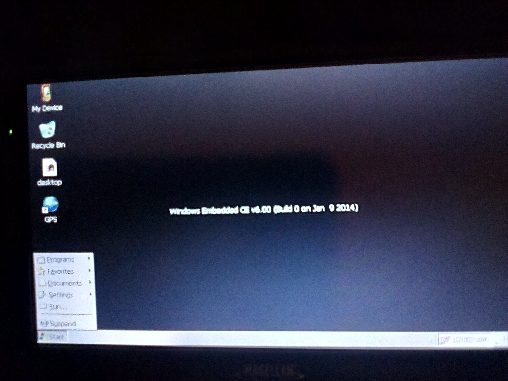
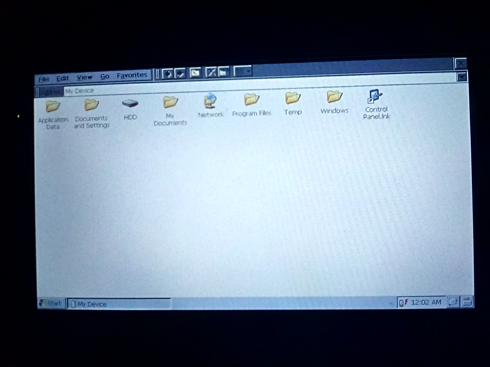
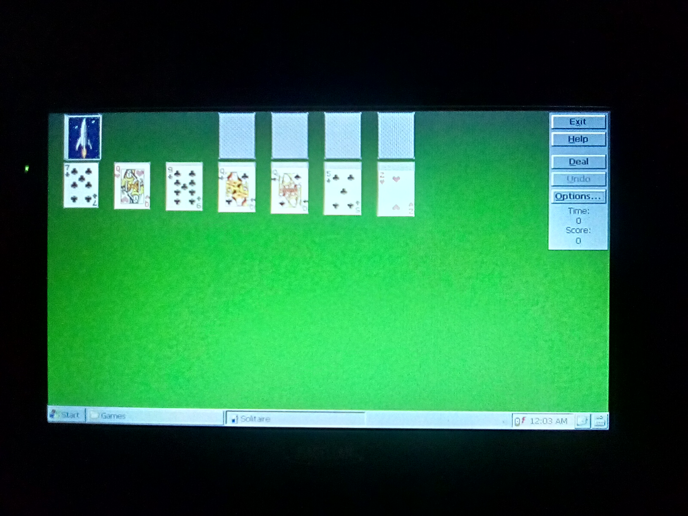
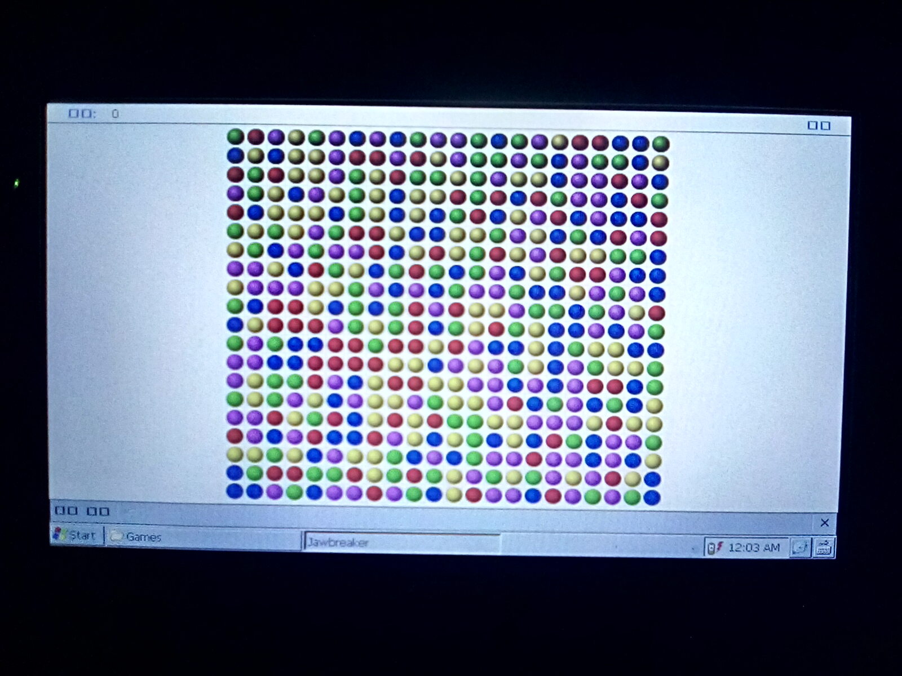

hacking a magellan gps
before using this as a tutorial make a backup of the device's storage this may or may not work on other model's
I got this neat gps at a GoodWill and I figured out it run's Windows CE 6.0!,
So i was curious and found this hackaday article
when following it it turned out the way they loaded programs instead of the stock OEM software didn't work
for me so instead what I did is connect the device with mini usb cable to my window's machine this most likly will work for unix and macos
I made a backup of the drive that showed up on my pc incase anything went wrong then i went to the /apps folder and replaced the mgnShell.exe with MobileNavigator.exe
and then I had a working Windows CE 6.0 box my device sadly has a broken battery so
it needs external power at all time's but it still does work as a WinCE box!
resource's and fun thing's
mobile navigator shell
a TON of program's and game's for Windows CE (google drive download)
images of device



